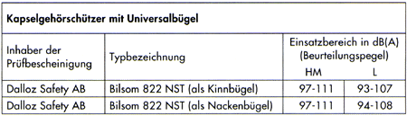
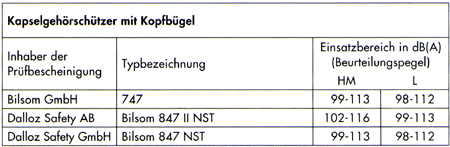
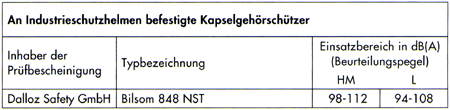
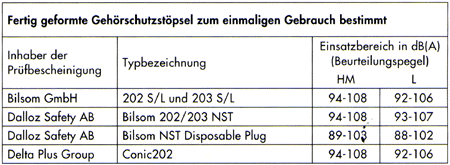
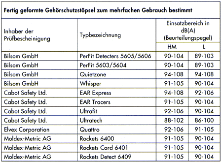
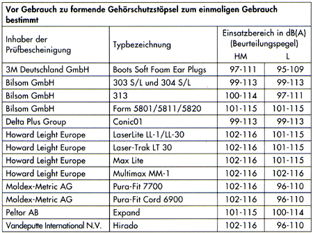
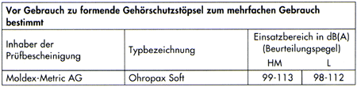
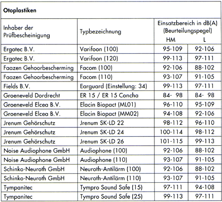
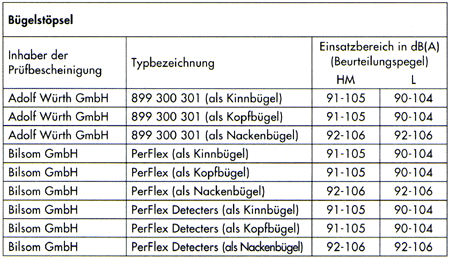
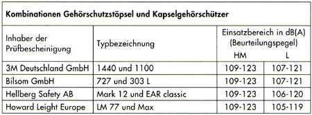
| Einsatzbereich HM = | hoch-/mittelfrequenter Lärm (LC - LA < 5dB), HML-Check nach EN 458 |
| Einsatzbereich L = | tieffrequenter Lärm (LC - LA > 5dB), HML-Check nach EN 458 |
Hoch-/mittelfrequenter Lärm wird z. B. von Gebläsen an Kehrsaugmaschinen oder Silofahrzeugen, tieffrequenter Lärm von Dieselmotoren ohne Antrieb von Nebenaggregaten (Gebläse) emittiert.
Tabelle 1: Liste geeigneter und geprüfter Gehörschützer
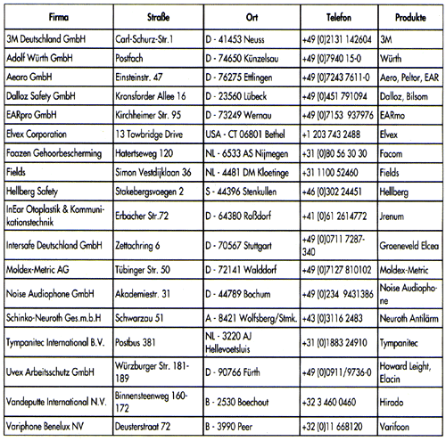